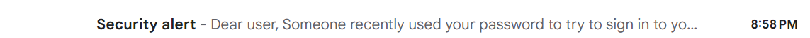
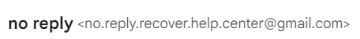
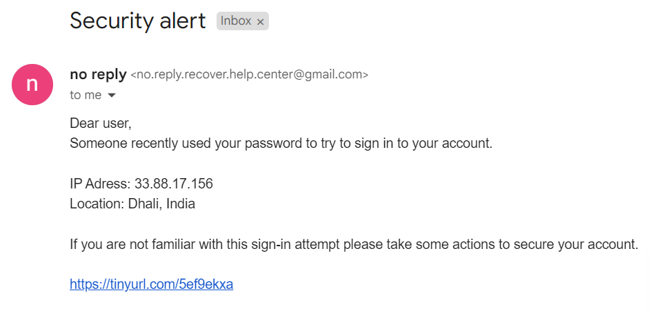
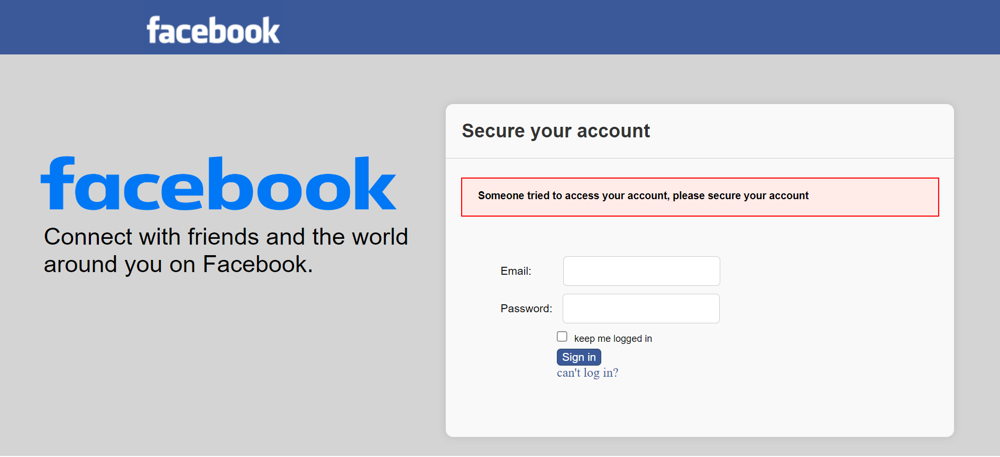

Guide: Protect Yourself from Social Media Phishing Attacks
Social media phishing attacks are fraudulent attempts to obtain sensitive information, such as usernames, passwords, and financial details, by impersonating legitimate entities on social media platforms. Phishing attacks can take various forms, including fake login pages, deceptive messages, and malicious links, and they often exploit trust and familiarity to deceive unsuspecting users.
Fake login fishing attack:
One common type of social media phishing attack involves fake login pages that mimic the appearance of legitimate social media platforms. Attackers create fake login pages and send links to unsuspecting users, urging them to log in to their accounts to view a message, claim a prize, access exclusive content or change their password. When users enter their login credentials on the fake page, the attackers capture the information and use it to compromise the victims' accounts.
Attack explanation:
The attacker begins by creating a deceptive message with a compelling headline to grab the recipient's attention. The headline may include phrases such as "Urgent Action Required," "Security Alert," or "Important Account Update" to prompt the recipient to open the email and read the contents.
The attacker sends a deceptive message to the victim using a fake email address. The attacker tries to create an email address that looks like a real address of the social media platform. Sometimes it even include the social media platform name, Help Center, No reply and etc..
The deceptive message prompting the recipient to take action and secure the account by clicking on the link. The message creates a sense of urgency and encourages the recipient to take immediate action, increasing the likelihood of falling for the phishing attempt.
Finally, the link in the email is the most important part of the phishing attack. The link is the fake login page that the attacker created to capture the user's login credentials.
Here is one of the examples of the fake login pages that i used in this social media phishing attack:
As you can see, the fake login page looks very similar to the legitimate Facebook login page, making it difficult for users to distinguish between the two. The attackers use elements such as the Facebook logo, color scheme, and input fields to create a convincing replica of the real login page.
What can we do with the data?
When an attacker successfully executes a social media phishing attack and obtains sensitive information from the victim, they can potentially carry out various malicious activities such as:
- Another fhishing attacks.With access to a victim's social media contacts or followers, attackers can launch targeted phishing campaigns using the victim's identity. By posing as the victim, attackers can trick others into disclosing sensitive information or clicking on malicious links, perpetuating the cycle of social media phishing attacks.
- Account damage.With access to a victim's username and password, attackers can hijack their social media accounts. Once in control, attackers can impersonate the victim, post malicious content, send spam messages, or conduct further phishing attacks on the victim's contacts.
- Data steal. In some cases, attackers may target social media accounts to access sensitive information stored within the account, such as private messages, photos, and personal documents. This information can be exploited for blackmail, extortion, or sold on the dark web to other malicious actors.
- Identity theft. Personal information obtained from social media accounts, such as full name, date of birth, address, and contact details, can be used for identity theft. Attackers may use this information to open fraudulent accounts, apply for loans or credit cards in the victim's name, or commit other financial crimes.
- Financial fraud. With access to a victim's financial details that maybe connected to the social media account, such as credit card numbers, bank account information, or payment credentials, attackers can conduct unauthorized transactions, make fraudulent purchases, or steal funds from the victim's accounts.
How to Protect Yourself from Social Media Phishing Attacks
Here are some tips to help you protect yourself from social media phishing attacks:
1. Be Skeptical of Unsolicited Messages
Be cautious of unsolicited messages received through social media platforms, email, or other channels. If you receive a message requesting personal information or urging you to click on a link, verify the sender's identity before taking any action.
2. Verify Links Before Clicking
Before clicking on a link in a message or post, hover your mouse over the link to preview the URL. If the URL looks suspicious or unfamiliar, do not click on it. Instead, manually type the website's address into your browser to access the legitimate site.
3. Avoid Providing Personal Information
Do not share sensitive information, such as your login credentials, financial details, or personal identification, in response to unsolicited messages. Legitimate organizations will never ask you to provide such information through social media or email.
4. Enable Two-Factor Authentication
Enable two-factor authentication (2FA) on your social media accounts to add an extra layer of security. 2FA requires you to provide a second form of verification, such as a code sent to your mobile device, in addition to your password when logging in.
5. Keep Your Software Updated
Regularly update your operating system, web browser, and security software to protect against known vulnerabilities and security flaws. Software updates often include patches to fix security issues that could be exploited by phishing attacks.
6. Report Suspicious Activity
If you encounter a suspicious message or post on social media, report it to the platform's administrators. Reporting suspicious activity can help prevent others from falling victim to phishing attacks.
7. Educate Yourself and Others
Stay informed about the latest phishing techniques and scams to recognize potential threats. Educate your friends, family, and colleagues about the risks of social media phishing and encourage them to follow best practices for online security.
8. Trust Your Instincts
If something seems too good to be true or raises suspicion, trust your instincts and proceed with caution. Avoid engaging with suspicious messages, offers, or requests, and seek guidance from trusted sources if you are unsure about the legitimacy of a communication.
By following these tips and staying vigilant, you can reduce the risk of falling victim to social media phishing attacks and protect your personal information and online accounts.
Remember: Think before you click, and always prioritize your online security and privacy.